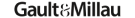
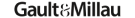

notre vigneron
Auguste Favre est un vigneron passionné, originaire du pittoresque village de Sion, au cœur du Valais. Issu d'une famille de vignerons depuis quatre générations, il a été bercé dès son enfance par les traditions viticoles et a développé une profonde connexion avec la terre et les vignes.
Une Philosophie
Les vins d’Auguste sont élaborés avec une attention méticuleuse portée à chaque détail, depuis la vigne jusqu'à la bouteille. Il pratique une agriculture biodynamique, favorisant la biodiversité et le maintien de la santé des sols sans recours aux pesticides ou aux engrais chimiques. La vendange est effectuée manuellement, garantissant une sélection rigoureuse des raisins..
Découvrez la cave
Venez explorer l’univers du vin naturel au cœur du Valais ! Auguste Favre vous ouvre les portes de son domaine pour une visite authentique et conviviale. Entre terroir, savoir-faire artisanal et dégustation de cuvées uniques, vivez une expérience inoubliable alliant passion et nature. Réservez votre visite dès maintenant !
Contact
Horaire
Newsletter
inscription
 
